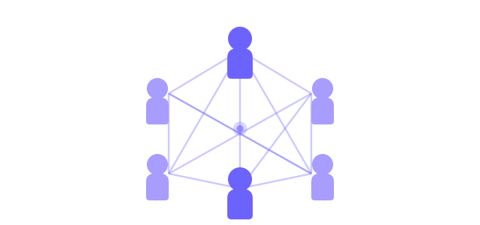

A BiblioAO nasceu em 2025 com um propósito claro: tornar acessível a literatura produzida em Angola e nos restantes países de língua portuguesa. Muitas destas obras são difíceis de encontrar em bibliotecas convencionais ou fora dos grandes centros urbanos.
Começámos com 50 títulos de autores angolanos e hoje disponibilizamos mais de 500 obras de escritores de Angola, Brasil, Cabo Verde, Guiné-Bissau, Moçambique, Portugal, São Tomé e Príncipe e Timor-Leste.
A plataforma é completamente gratuita, financiada por parcerias com instituições académicas e culturais da CPLP.

Acreditamos que a diversidade da língua portuguesa é um património imaterial que deve ser partilhado e celebrado.
O conhecimento é um direito de todos. Por isso a nossa plataforma é e será sempre gratuita para qualquer leitor.
Valorizamos a literatura de todo o mundo lusófono, garantindo que as diferentes vozes e culturas sejam representadas.
Actualizamos constantemente o catálogo e melhoramos a plataforma com base no feedback da comunidade.